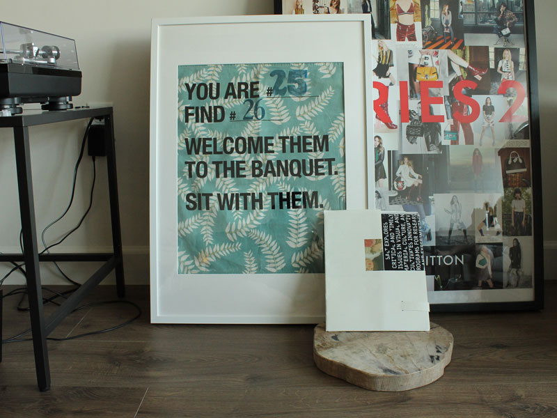
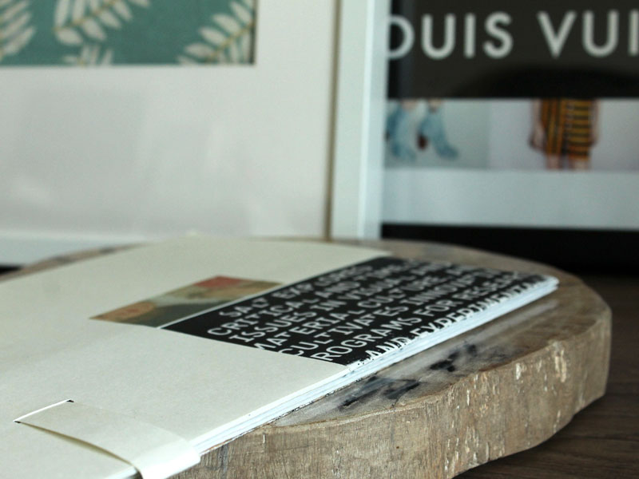
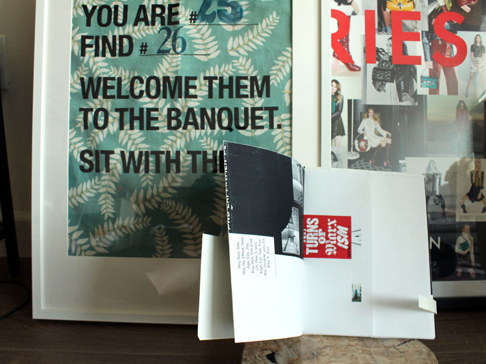
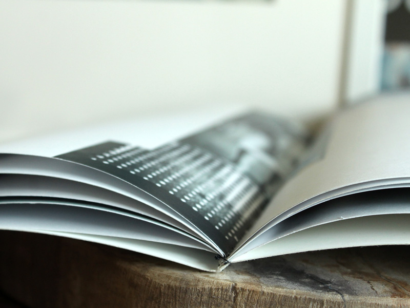

Design
King and Lyre
Volume I
Biannual Publication
This publication is a self-initiated project that uses design as a means of
illustrating new points of political discourse. This project was designed to
strengthen the understanding of contextual frameworks within text and
imagery, as well as put together an efficient means of undergoing thorough
research, design and execution.
All publications are composed of inkjet prints that are hand-assembled
and bound by hand.
- 
- 
- 

- 